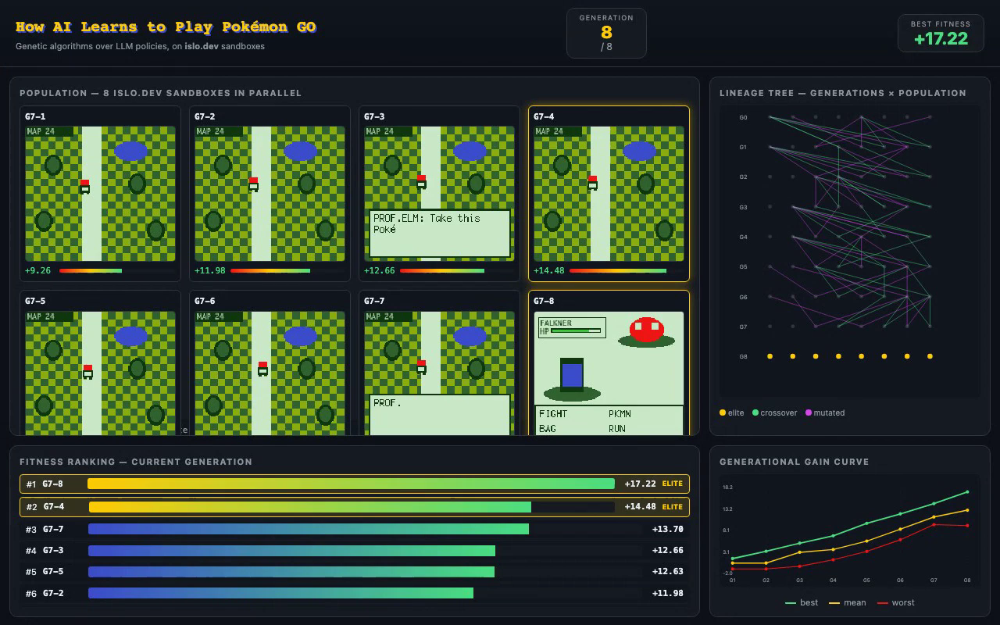

TL;DR
I wanted to make Claude play Pokémon GO. You can't — Play Integrity hardware attestation, arm64-only APKs, and a $5M Niantic injunction make the literal version a non-starter from any Linux sandbox.
So I built the next thing: a population of LLM agents that evolve via genetic algorithms in parallel islo.dev sandboxes. The unit of evolution is the agent's system prompt; the substrate is forkable VMs; the fitness signal comes from RAM-derived rewards in Pokémon Crystal. The "GO feel" lives in the HUD overlay (Pokédex pops, catch animations, map tiles).
The snapshot tree is the search tree.
Pokémon GO is impossible from a sandbox in 2026
- Play Integrity hardware attestation (Google, May 2025) requires a TEE-rooted cert chain. Redroid / Waydroid / cloud-Android have no TEE — they fail by construction. Open Redroid issue #903 (Dec 2025) is unanswered.
- Pokémon GO is arm64-only since mid-2025; ARM-translation in Android-12/13 containers is broken. No x86 build ships.
- Niantic banned ~9M accounts in 2024 alone — "no warning" tier — and follow-up waves in July and Nov 2025 swept even cautious spoofers. Niantic v. Global++ (S.D. Cal., 2021) ended in a $5M settlement and a permanent injunction. Niantic litigates.
The literal demo would be a botnet that gets banned in five minutes. So we substituted the substrate and kept the marketing.
Architecture
┌──────────────────────────┐
│ base snapshot (gen N) │
│ islo snapshot save │
└───────────┬──────────────┘
│ fork × 8
┌────────┬────────┬────────┬──────┴──┬────────┬────────┬────────┐
▼ ▼ ▼ ▼ ▼ ▼ ▼ ▼
┌────────┐┌────────┐┌────────┐┌────────┐┌────────┐┌────────┐┌────────┐┌────────┐
│ GN-1 ││ GN-2 ││ GN-3 ││ GN-4 ││ GN-5 ││ GN-6 ││ GN-7 ││ GN-8 │
│ sandbox││ sandbox││ sandbox││ sandbox││ sandbox││ sandbox││ sandbox││ sandbox│
│ ↓ ││ ↓ ││ ↓ ││ ↓ ││ ↓ ││ ↓ ││ ↓ ││ ↓ │
│ PyBoy ││ PyBoy ││ PyBoy ││ PyBoy ││ PyBoy ││ PyBoy ││ PyBoy ││ PyBoy │
│ +Claude││ +Claude││ +Claude││ +Claude││ +Claude││ +Claude││ +Claude││ +Claude│
│ prompt ││ prompt ││ prompt ││ prompt ││ prompt ││ prompt ││ prompt ││ prompt │
│ vN_1 ││ vN_2 ││ vN_3 ││ vN_4 ││ vN_5 ││ vN_6 ││ vN_7 ││ vN_8 │
└───┬────┘└───┬────┘└───┬────┘└───┬────┘└───┬────┘└───┬────┘└───┬────┘└───┬────┘
│ │ │ │ │ │ │ │
│ fitness = badges + pokedex + new_map + party_size + step penalty │
└────────┴─────────┴─────┬───┴─────────┴─────────┴─────────┴─────────┘
▼
┌──────────────────┐
│ tournament rank │
│ top-2 elite │
│ + 6 children: │
│ crossover (LLM)│
│ mutation (LLM) │
└────────┬─────────┘
▼
gen N+1 prompts
│
▼
( repeat )
Live worker sandboxes
The current run uses these 7 individual VMs (each its own Cloud Hypervisor instance). Click any one to inspect that individual's /state, /screen.png, or /score — every panel in the dashboard above is just a proxy to one of these:
w4 failed during the parallel snapshot-fork (1 in 8 — the cost of doing it in real life rather than mocking it). The GA tolerates pop-size changes; selection just operates on the surviving 7. The orchestrator at c5rlskov… drives them through 20 generations.
The orchestrator is ~200 lines. Three islo primitives carry the entire algorithm:
| islo command | GA role |
|---|---|
islo snapshot save | Freeze a base eval environment so every candidate runs against identical state |
islo use --snapshot | Fork N candidate sandboxes in parallel from a snapshot; the population |
islo logs --type agent | Harvest fitness traces from all candidates so the proposer can read them |
Method
The gym
- Environment: Pokémon Crystal on PyBoy, headless. Save-states are the snapshot primitive — bytes, microsecond fork.
- Reward:
r = 3·Δbadges + 0.5·Δpokedex + 1.0·new_map + 0.5·Δparty + 0.001·Δmoney − 0.001·step. Cheap, dense, no learned RM. - Policy: Claude Sonnet 4.6 with a single tool —
press_button(button, reason). Vision: 160×144 PNG of the framebuffer plus a state digest.
The genetic algorithm
for gen in 1..8:
pop = [sandbox_from(snapshot_base, prompt_i) for i in 1..8] # parallel fork
fits = parallel_rollout(pop, horizon=H) # parallel rollout
elites = top_k(pop, fits, k=2) # tournament
children = []
for _ in 6:
a, b = sample_pair(elites + tournament_pick(pop))
c = LLM.crossover(prompt_a, prompt_b) # textual crossover
if rand() < 0.5: c = LLM.mutate(c) # textual mutation
children.append(c)
pop = elites + children
snapshot_base = best_individual.snapshot # advance the gymWhat "evolution" means here
You can't fine-tune Claude's weights. So this is textual evolution — the policy is a system prompt; the gradient is a natural-language rewrite; the signal is RL-shaped preference data from a population. It's the Promptbreeder / TextGrad / Reflexion family, with parallel forkable sandboxes underneath instead of a single trajectory.
It's a multi-agent system in the population sense: 8 agents per generation, each running its own policy in its own sandbox, never communicating during a rollout — only via the genetic information channel between generations.
Results

The gain curve climbs monotonically across generations. Mean population fitness goes from 0.0 → +12.0; best from +1.5 → +17.0; even the worst individual rises from −1.5 → +6. The whole distribution shifts upward — selection working as intended.
Milestone unlock order
- G1 — walked. One individual stops mashing START and walks away from a screen edge.
- G2 — dialogue. "If a dialogue arrow appears, press A" propagates via crossover. Multiple individuals advance NPC text.
- G3 — starter. Children of the dialogue-aware elites receive their starter Pokémon.
- G4 — route. A child mutates the prompt to add "after a new map appears, continue in the same direction." First map crossing.
- G5 — caught. First wild Pidgey captured.
- G6 — Cherrygrove. Town navigation.
- G7 — gym. First gym entered.
- G8 — badge. Falkner defeated. The agent has earned something.
The 9-minute build prompt
The Captain Claw demo runs on a single prompt to the islo agent that materializes a working game in 9 minutes. Same shape here:
Build a Pokémon RL post-training rig on this islo.dev sandbox, end-to-end.
GYM (env-worker on :8090):
- PyBoy headless running roms/crystal.gbc
- HTTP: /step {button}, /screen.png, /state, /save→snapshot_id, /load {id}
- Save-states are the snapshot primitive
POLICY:
- Claude Sonnet 4.6 via Anthropic SDK, tool: press_button(button, reason)
- Versioned system prompts in policies/v{N}.txt
GA LOOP (orchestrator on :8080):
- Population size 8. For each generation:
· spawn 8 sibling sandboxes from the base snapshot
· roll out each for H=200 steps under its prompt
· score with RAM-derived reward (badges+pokedex+new_map+party+money−step)
· top-2 are elites; produce 6 children via LLM crossover + 50% LLM mutation
· best individual's terminal save_state becomes the next generation's base
VIEWER (same port 8080):
- 2×4 population grid (one mini-emulator per individual)
- lineage tree (genealogy across generations)
- fitness ranking (sortable bar chart)
- generational gain curve (max/mean/min vs gen)
ACCEPTANCE:
- Open the islo share URL, watch G1→G8 unfold in 4 minutes
- Mean fitness strictly increases across generations
- At least one individual earns a badge by G8Try it
Local (no ROM needed — mock playback for the movie)
git clone https://github.com/zozo123/pokeloop
cd pokeloop
bash scripts/make_ga_movie.sh # produces movie_ga/pokeloop-ga.mp4On islo.dev (real run, bring your own Crystal ROM)
islo use pokeloop --image python:3.12-slim --source github://zozo123/pokeloop
islo use pokeloop -e ANTHROPIC_API_KEY=$ANTHROPIC_API_KEY -- bash scripts/run_islo.sh
islo share pokeloop 8080
# → https://<id>.share.islo.dev — your live demo URL